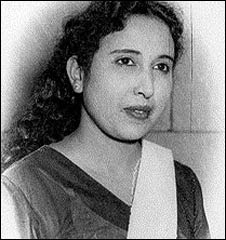

आज सुबह अपने खज़ाने में से इकबाल बानो/Iqbal Bano की गज़लों को सुन रहा था, अचानक एक ऐसी गज़ल बजने लगी कि दिल झूमने लगा। इसे मैने पहले कभी भी नहीं सुना था, मेरे अपने संग्रह में होने के बावजूद...... एक बार से मन नहीं भरा.. बार बार सुनी। फिर मन हुआ कि क्यों ना आपको भी सुनवाया जाये। वैसे भी महफिल महीनों से सूनी पड़ी है।
गज़ल और गायिका के लिए कुछ भी नहीं कहा जायेगा, बस सुनिये और आनन्द लीजिये।
External player or recording not archived. Original media link
उल्फ़त की नई मंज़िल को चला
तू बाहों में बाहें डाल के
दिल तोड़ने वाले देख के चल
हम भी तो पड़े हैं राहो में
क्या क्या ना जफ़ायें दिल पे सही
पर तुम से कोई शिकवा न किया
इस जुर्म को भी शामिल कर लो
मेरे मासूम गुनाहों में
जहाँ चांदनी रातों में तुम ने
खुद हमसे किया इकरार ए वफ़ा
फिर आज है क्यों हमसे बेगाने
तेरी बेरहम निगाहों में
हम भी है वोही, तुम भी वोही
ये अपनी अपनी किस्मत है
तुम खेल रहे हो खुशियों से
हम डूब गये हैं आहों में
दिल तोड़ने वाले देख के चल
हम भी तो पड़े है राहों में
शायर:कतील शिफ़ाई
इस गीत को हिन्दी फिल्म कामसूत्र में शोभागुर्टू ने भी गाया था।
डाउनलोड लिंक